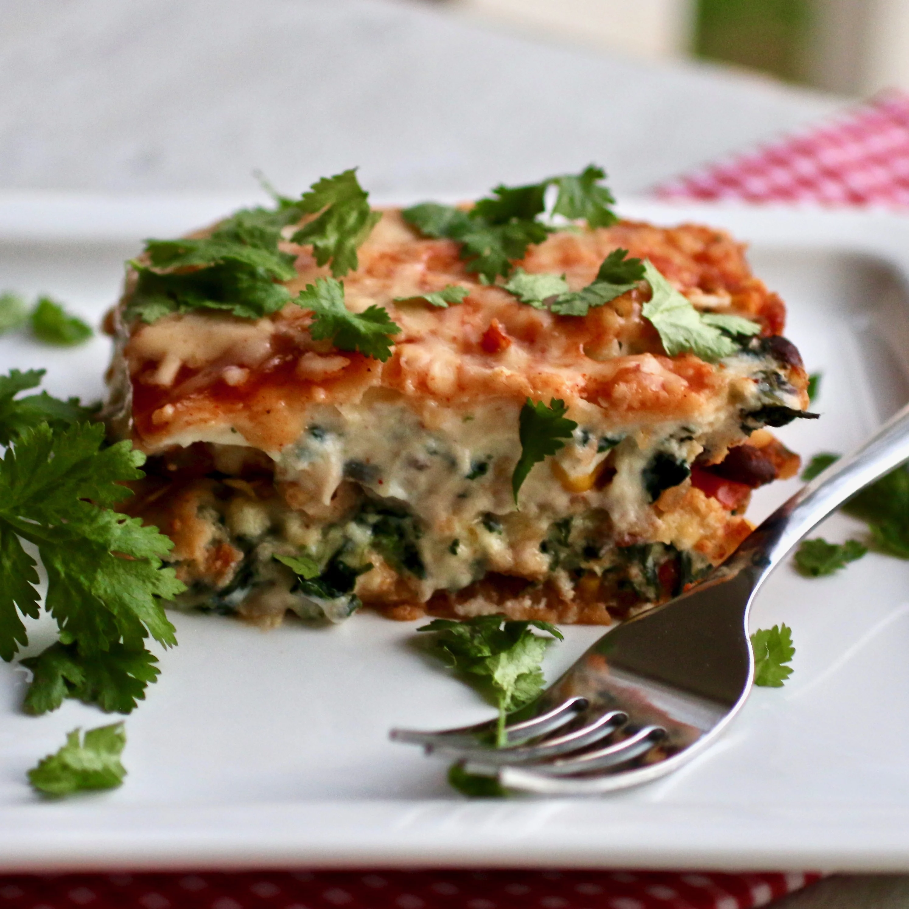

Vegetarian Mexican Lasagna

A vegetarian Tex-Mex lasagna made with corn tortillas and packed with cheese and veggies. Garnished with cilantro, sour cream, and other favorite toppings.
This dish was a hit with the whole family. Followed recipe exactly, other than adding a little extra spinach since we love it. The ratio of veggies and cheese and corn tortillas is
perfect ! The enchilada sauce and salsa you use can vary the flavors to your liking, which is perfect. I used green enchilada sauce, next time I will try using red.
Ingredients
- Cooking Spray
- 2 Tablespoons Olive Oil
- 1 Cup Diced Sweet Onions
- 2 Jalapeno Peppers, Seeded and Diced
- 1 Red Bell Pepper, Diced
- 4 Cloves Garlic, Minced
- 1 (16 ounce) Jar Salsa
- 1 (15.5 ounce) Can Black Beans, Rinsed and Drained
- 1 (15.25 ounce) Can Whole Kernel Corn, Drained
Steps
- Preheat the oven to 350 degrees F (175 degrees C). Spray a 9x13-inch baking dish with cooking spray.
- olive oil in a large skillet over medium heat. Add onion, jalapenos, bell pepper, and garlic; cook and stir
until onion is translucent, 5 to 7 minutes. Reduce heat to medium-low and add salsa, black beans, corn, chili
powder, and cumin. Bring to a simmer; let simmer for 5 minutes.
- Combine 2 cups pepper Jack cheese, ricotta cheese, spinach, egg, salt, and pepper in a bowl.
- Place 6 corn tortillas in the bottom of the prepared baking dish. Add 1/2 of the vegetable mixture using a slotted spoon,
followed by 1/2 of the cheese and spinach mixture. Add a layer of 6 tortillas and follow with remaining vegetables and
remaining cheese mixture. Top with remaining tortillas. Spread enchilada sauce across the top and remaining pepper Jack cheese.
- Bake in the preheated oven until cheese is melted and bubbly, 45 minutes to 1 hour.